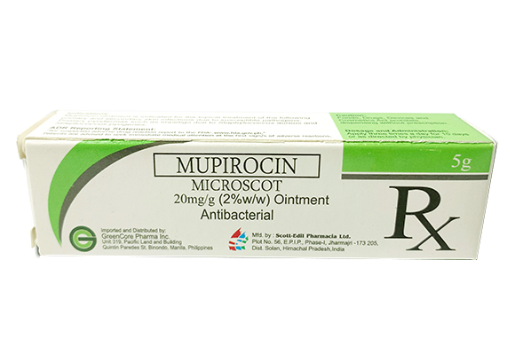

Medicine Guide For Itching

CLOTRIMAZOLE-CANESTEN
Description
Known as alipunga, athlete's foot is a fungal skin infection caused by fungi that thrive in warm and moist environments like changing rooms, showers and public pools. Walking barefoot in these places puts you at greater risk. Athlete’s foot usually occurs between your toes, but it can also affect the soles and sides of your feet.Guide
Apply the cream thinly to the affected area and smooth in gently. Repeat 2-3 times a day for up to 3 or 4 weeks to kill the root of the infection. The length of treatment may vary depending on the kind of infection you have.❕Don’t forget❕
Even if your symptoms seem to be clearing up, you should complete the full course of treatment to ensure the infection is treated.

BEPATHEN
Description
Bepanthen Itch Relief Cream is a steroid-free cream that helps relieve itching and redness in as fast as 30 minutes while promoting skin barrier restoration.Guide
Bepanthen Itch Relief Cream is free from steroids and may be applied as needed
CALAMINE-CHLORELIEF
Description
ChloRelief is an over-the-counter (OTC), non-steroidal lotion that is a first-aid treatment to any itch and rash. Calamine, one of the main ingredients of the lotion, has been proven for years to be mild, safe and effective in providing instant relief to itch and rash brought about by various factors such as insect bites or stings, sunburn, chickenpox, measles, razor burn, eczema or skin asthma, diaper rash, prickly heat, psoriasis, and itch as side effect of hemodialysis. ChloRelief also contains Eucalyptus extract that provides a mild cooling and calming effect to the skinGuide
The main benefit of calamine lotion is that it can relieve itchiness. Poisonous plants such as poison ivy, poison oak and poison sumac can cause itching and skin irritation. Calamine lotion for poison ivy and other poisonous plants can help relieve the itch, along with any pain or discomfort. In addition, it can help dry up any oozing or weeping that can develop on your skin due to the irritation. Other calamine lotion uses include:• Bug bites: You can apply calamine lotion to insect bites and stings to help with mild reactions. Apply the lotion several times a day until your symptoms clear up or the bug bites are gone.
• Chickenpox: You can use calamine lotion to help relieve the symptoms of this infectious condition. It can also prevent further skin infections.
• Shingles: Along with antiviral medicines, you can use calamine lotion for shingles. Apply the lotion directly to your skin to get some relief from the symptoms of this condition.
• Swimmer’s itch: You can use calamine lotion for rashes like swimmer’s itch. You can develop this skin condition if you swim in water containing certain parasites.
• Heat rash: You can use calamine lotion for heat rash as well. A heat rash is an area of your skin that becomes irritated when sweat gets trapped in your pores and ducts beneath your skin.
• Scabies: A small mite can cause a skin condition called scabies. To ease the itching from scabies, you can try applying calamine lotion. It can help relieve your symptoms but it won’t kill the mites.
• Chigger bites: Chiggers are a type of mite that feeds on human skin. Their bites can cause skin irritation and itching. You can apply calamine lotion to help relieve the itching.
• Acne: You may be able to use calamine lotion for acne. While it won’t treat your acne, it may help dry out a pimple if you use it as a spot treatment.
• Hives: You can develop hives for many different reasons. Calamine lotion for hives can help relieve the itching caused by this skin condition.
MOMETASONE-MOMECORT
Description
Mometasone furoate belongs to a group of medicines called topical corticosteroids, which are used on the skin to relieve inflammation (e.g., swelling, redness) and itch caused by certain skin problems. Mometasone furoate cream and ointment are classified as medium potency topical corticosteroids.Guide
Directions for Use: Rub a thin layer of mometasone cream or ointment to affected areas of the skin once a day, or as directed by a doctor. Do not use on the face for longer than 5 days. Do not use for longer than 5 days in children, unless directed by a doctor.
UNITED HOME-DERMATEC
Description
Mometasone furoate belongs to a group of medicines called topical corticosteroids, which are used on the skin to relieve inflammation (e.g., swelling, redness) and itch caused by certain skin problems. Mometasone furoate cream and ointment are classified as medium potency topical corticosteroids.Guide
Directions for Use: Rub a thin layer of mometasone cream or ointment to affected areas of the skin once a day, or as directed by a doctor. Do not use on the face for longer than 5 days. Do not use for longer than 5 days in children, unless directed by a doctor.
KETOCONAZOLE-NIZORAL
Description
Ketoconazole shampoo is an antifungal medication. It treats fungal or yeast infections in your skin. You can use this medicated shampoo as you would use a regular shampoo by massaging it into your skin. Follow the label for directions on how long you should let the product set before rinsing it off.Guide
How to use ketoconazole cream1. Wash and dry the infected area of skin. If you're treating your feet, make sure you dry between your toes.
2. Use your own towel or flannel. This stops you passing the infection on to anyone else.
3. Gently rub the cream into the infected area and surrounding skin. You'll usually need a small amount, depending on the size of the area you're treating. Be careful not to let the cream get into your eyes or mouth. If it does get into your eyes or mouth, rinse them with water.
4. Wash your hands afterwards. This stops you spreading the infection to other parts of your body or other people.
If you're using any other creams, ointments or lotions on the same area of skin, do not put them on at the same time as ketoconazole cream. After putting on the ketoconazole cream, wait 30 minutes before you use different products on the same area. This gives the ketoconazole time to be absorbed into your skin.

ZINC OXIDE-RASH FREE
Description
This medicine contains zinc oxide, a skin protectant. Zinc oxide acts as a physical barrier that soothes the skin and prevents it from coming into direct contact with external irritants. This protective effect prevents worsening of the condition and promotes the normal healing processes of the skin.Guide
Directions for UseWash hands before and after each application.
For diaper rash:
• Change wet and soiled diapers promptly.
• Clean the diaper area and allow it to dry.
• Apply zinc oxide ointment as often as necessary, with every diaper change, particularly at bedtime or when the skin may be exposed to wet diapers for a long period of time.
For other minor skin conditions:
• Clean the affected and surrounding areas of the skin with mild soap.
• Rinse thoroughly with water and pat dry.
• Apply a sufficient amount of zinc oxide ointment and rub gently on the affected areas of the skin once or twice daily. Use gauze dressing when needed.
Or, as directed by a doctor.
For more information on safety, precaution and other information about this product, please see the Patient Information Leaflet.

MOMETASONE-ELICA
Description
This cream is the solution, with a formula that contains mometasone, a cortisone derivative that is known for fighting itching and dermatitis. Activates natural substances in the skin to reduce redness and irritation.Guide
Read the Patient Information Leaflet if available from your pharmacist before you start using this medication and each time you get a refill. If you have any questions, ask your doctor or pharmacist.This medication is for use only on certain areas of skin: do not use it on the face, groin, or underarms, or for diaper rash, unless directed to do so by your doctor.
Wash and dry your hands before using. Clean and dry the affected area. Apply as directed by your doctor, usually a thin film of medication to the affected area once daily. Gently rub in. Do not cover the treated area with bandages or other dressings unless instructed to do so by your doctor.
Do not wash or rinse the medication off immediately after applying it. Wash your hands with soap and water after each use unless you are using this medication to treat the hands. Avoid getting this medication in your eyes, nose, or mouth. If this occurs, rinse thoroughly with water and call your doctor if irritation lasts.

Apply a thin film of the medication to the affected area. You can cover the area with a sterile gauze dressing (bandage). Do not use an airtight bandage (such as a plastic-covered bandage).
Talk to your care team about the use of this medication in children. While it may be prescribed for children for selected conditions, precautions do apply.
⚠️Overdosage: If you think you have taken too much of this medicine contact a poison control center or emergency room at once.
NOTE: This medicine is only for you. Do not share this medicine with others.
MUPIROCIN-MICROSCOT
Description
Mupirocin is an antibacterial ointment used to treat impetigo and secondary skin infections caused by Staphylococcus aureus and Streptococcus pyogenes. Mupirocin, formerly termed pseudomonic acid A, 1 is a novel antibacterial agent with a unique chemical structure and mode of action apart from other antibiotic agents.Guide
This medication is for external use only. Do not take by mouth. Wash your hands before and after use. If you are treating a hand infection, only wash your hands before use. Do not get it in your eyes. If you do, rinse your eyes with plenty of cool tap water. Use it as directed on the prescription label at the same time every day. Do not use it more often than directed. Use the medication for the full course as directed by your care team, even if you think you are better. Do not stop using it unless your care team tells you to stop it early.Apply a thin film of the medication to the affected area. You can cover the area with a sterile gauze dressing (bandage). Do not use an airtight bandage (such as a plastic-covered bandage).
Talk to your care team about the use of this medication in children. While it may be prescribed for children for selected conditions, precautions do apply.
⚠️Overdosage: If you think you have taken too much of this medicine contact a poison control center or emergency room at once.
NOTE: This medicine is only for you. Do not share this medicine with others.